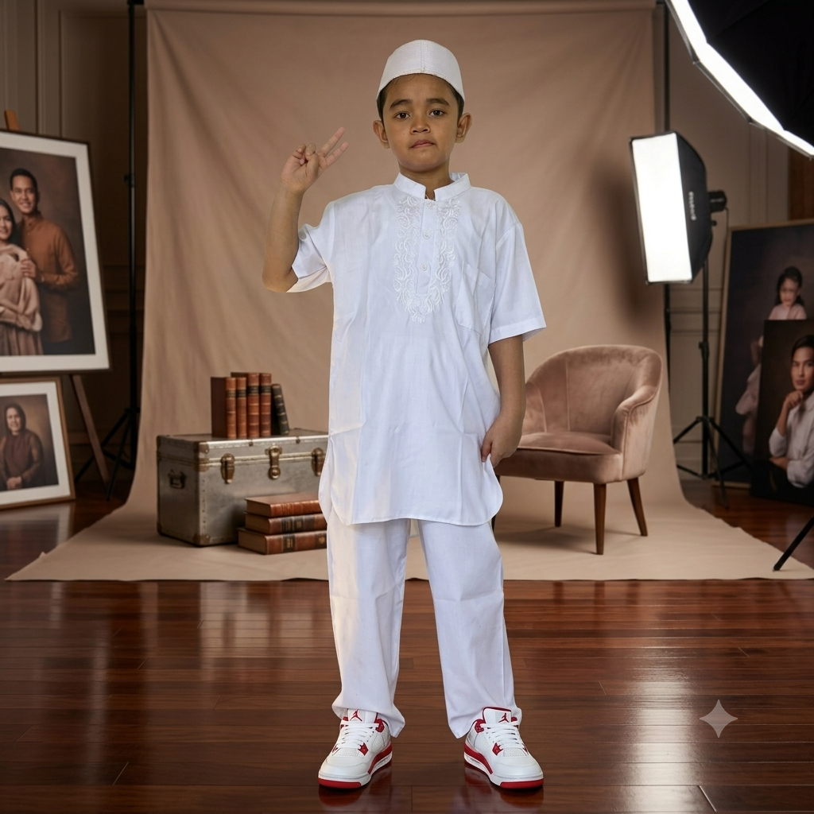

بِسْمِ اللَّهِ الرَّحْمَٰنِ الرَّحِيمِ
Undangan Tasyakuran Khitan
Kepada Yth.
Bapak/Ibu/Saudara/i
Kami mengundang Bapak/Ibu/Saudara/i pada acara khitanan ananda
بِسْمِ اللَّهِ الرَّحْمَٰنِ الرَّحِيمِ
Undangan Tasyakuran Khitan
Kepada Yth.
Bapak/Ibu/Saudara/i
Kami mengundang Bapak/Ibu/Saudara/i pada acara khitanan ananda
Walimatul Khitan

Dengan memohon rahmat & ridho Allah SWT, kami mengundang Bapak/Ibu/Saudara/i untuk hadir dalam acara tasyakuran khitan ananda kami.
Ayat Suci
رَبَّنَا هَبْ لَنَا مِنْ أَزْوَاجِنَا وَذُرِّيَّاتِنَا قُرَّةَ أَعْيُنٍ وَاجْعَلْنَا لِلْمُتَّقِينَ إِمَامًا
"Ya Tuhan kami, anugerahkanlah kepada kami istri-istri kami dan keturunan kami sebagai penyenang hati (kami), dan jadikanlah kami imam bagi orang-orang yang bertakwa."
QS. Al-Furqan: 74
Detail Acara
Merupakan suatu kehormatan & kebahagiaan bagi kami apabila Bapak/Ibu/Saudara/i berkenan hadir.
Hari & Tanggal
Sabtu, 15 Agustus 2026
Waktu
09.00 WIB – Selesai
Lokasi
Lapangan Futsal
Jl. Raya Cibanteng No.141, Cibanteng,
Kec. Ciampea, Kabupaten
Bogor,
Jawa Barat 16620
Menuju Hari Bahagia
Sampai bertemu di hari bahagia Arsya!
Tanda Kasih
Doa restu Bapak/Ibu/Saudara/i merupakan hadiah terindah bagi kami. Apabila ingin memberikan tanda kasih untuk Arsya, dapat menggunakan QRIS berikut.